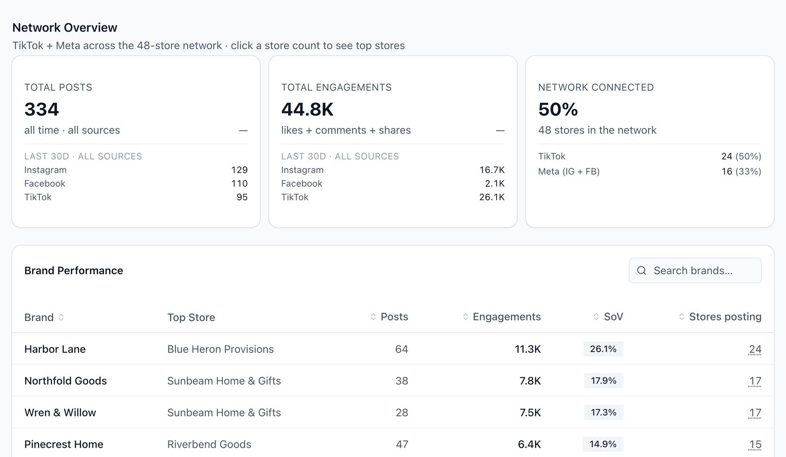
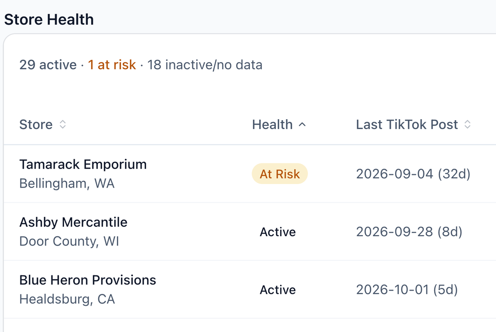
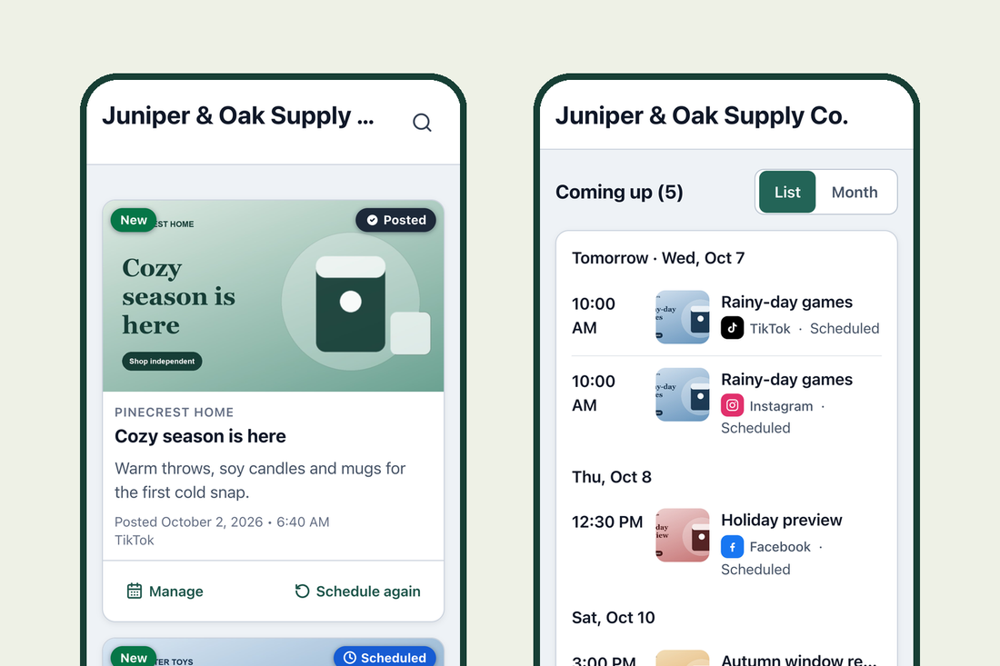
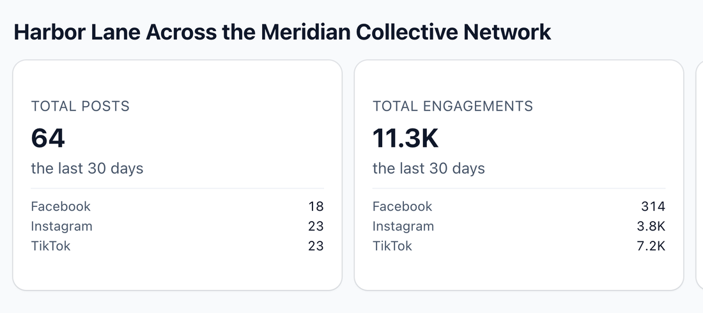

Connect.
Members authorize through TikTok’s and Meta’s official login screens. No passwords, nothing to install.
Get members posting. Show what it adds up to.
Social publishing and reporting for associations, co-ops and buying groups of independent retailers, so the brands behind you see the whole network, not one store at a time.
Request a demo
Illustrative product view · sample data
Members authorize through TikTok’s and Meta’s official login screens. No passwords, nothing to install.
Give every store ready-to-post content for TikTok, Instagram and Facebook, self-service, approved or fully managed, while preserving each member’s voice and control.
See every member’s reach in one network view, and share brand reports that support sponsorship and co-op marketing discussions.
IndieAmp is a B2B software platform for membership organizations of independent retailers: buying groups, associations and co-ops. Member stores connect their TikTok, Instagram, and Facebook Page accounts via secure OAuth, and IndieAmp provides them with weekly performance reports showing post counts, engagement (likes, comments, shares, reach), and brand-mention analytics so they can see how their social activity performs. Stores can also use IndieAmp to schedule and publish campaign content their network provides to their own connected accounts — reviewing, editing, or canceling every post before it goes live.
IndieAmp also aggregates this network-wide activity into reports for the network and the brand partners who run campaigns with its member stores.
Explore the platform → See how it works → What we access, and why →
Built for the organizations that unite independent retailers, the stores they support, and the brands they work with.
See member activity, content performance and brand mentions across connected accounts. Support stores with shared content and optional managed posting.

Find your network’s content, publish from phone or desktop, and get a weekly performance report. Choose self-service, individual approval, or fully managed posting, with your store’s permission guiding how content is published.

See how your brand appears and performs across participating stores. Use consolidated reporting to review campaign activity and inform sponsorship and co-op marketing plans.

Illustrative product views with sample data. Reporting includes posts members make directly on their connected TikTok, Instagram and Facebook accounts.
Your organization gets its own private, isolated environment, ready for members to connect.
Stores authorize access through TikTok’s and Meta’s official login and consent screens.
Post themselves, approve each post, or let the association handle it.
Network dashboards, brand reports and weekly member insights bring the activity together.
IndieAmp grew out of the day-to-day work of social measurement and brand reporting for independent retailers.
We build tools that make member participation easier and the network’s collective strength visible. About IndieAmp →
We read the minimum needed to do the job, with consent, through official channels. The full detail is in our Privacy Policy and on the Security & privacy page — this is the honest summary.
| WHAT WE ACCESS | WHY |
|---|---|
| Public profile basics — account name, handle, follower count | To identify the connected account and show network membership accurately |
| Content the member posted — captions, dates, links, formats | To attribute activity to campaigns and brands, and surface top posts |
| Engagement metrics — likes, comments, shares, views, reach | To measure performance for the member and the network |
| Publishing permissions (only if the member opts in) | To post content the member has explicitly chosen and scheduled |
See member publishing and network reporting in a demo for your association.
Member questions? Contact hello@indieamp.app.